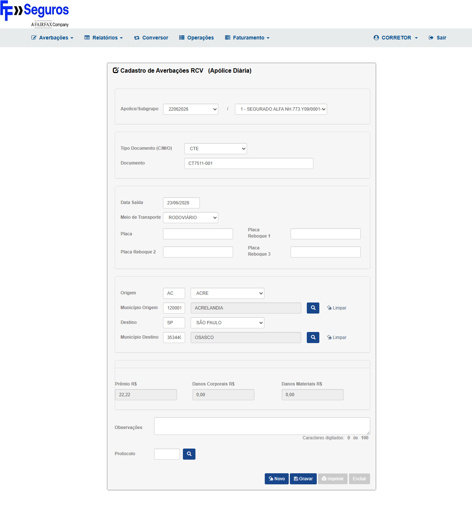
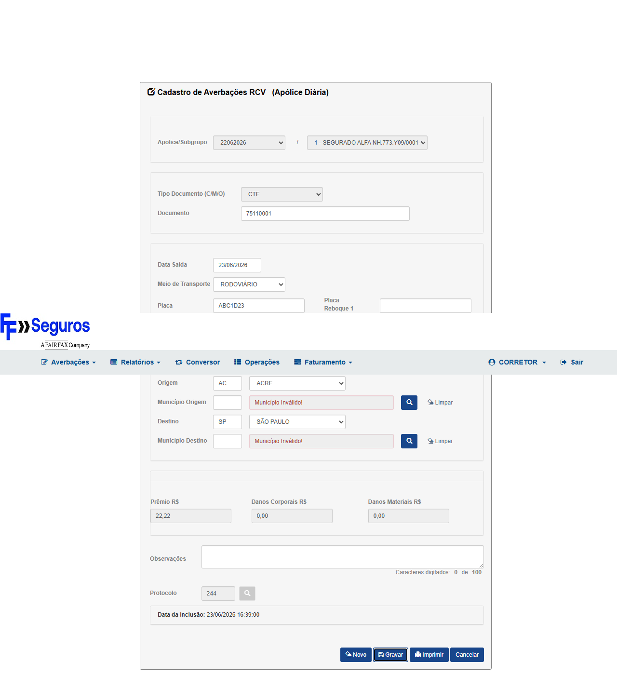
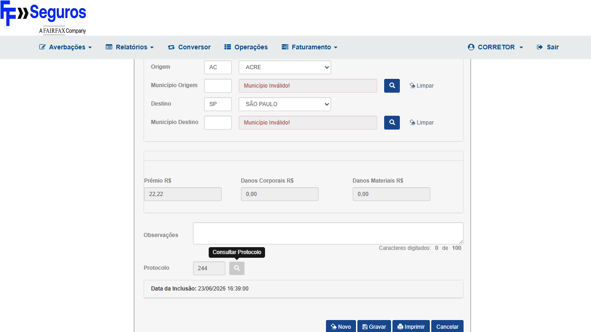

v_lmr_dm e v_lmr_dc
pelo indicativo EditarDmDcRamo59. Colunas incluídas no INSERT apenas quando o indicativo estiver ativo,
eliminando o HTTP 500 "Invalid column name" para averbações RCV ramo 59.| Item | Valor |
|---|---|
| Ambiente | CITNET FAIRFAX ALFA HML |
| URL base | https://fairfax-hml-faturamento.nsseg.com.br/alfa/citnet/ |
| Credenciais | CORRETOR / [senha HML — ver cofre] (perfil CORRETOR) |
| Módulo | Averbações → RCV |
| Ramo | 59 — RCV (Responsabilidade Civil Veículos) |
| PR do Fix | #1739 — gate v_lmr_dm/v_lmr_dc por EditarDmDcRamo59 |
| Dado | Valor |
|---|---|
| Segurado / Apólice | SEGURADO ALFA NH.773.Y09/0001-10 (seleção automática ao logar) |
| Estado Origem | AC — ACRE |
| Município Origem | 13 — ACRELANDIA |
| Estado Destino | SP — SÃO PAULO |
| Município Destino | 34401 — OSASCO |
| Prêmio R$ | 22,22 |
| Danos Corporais R$ | 0,00 |
| Danos Materiais R$ | 0,00 |
| Tipo | Positivo — Happy Path |
| Prioridade | P1 — Bloqueante |
| Pré-condições |
Usuário autenticado como CORRETOR no CITNET FAIRFAX ALFA HML. Segurado SEGURADO ALFA NH.773.Y09/0001-10 disponível com apólice RCV ativa. |
| Dados de entrada |
Origem: AC / Município: 13 (Acrelandia) | Destino: SP / Município: 34401 (Osasco) Prêmio: R$ 22,22 | Danos Corporais: R$ 0,00 | Danos Materiais: R$ 0,00 |
https://fairfax-hml-faturamento.nsseg.com.br/alfa/citnet/ e fazer login com perfil CORRETOR (Filial: FAIRFAX BRASIL SEG. CORP. S/A - 1)22,220,00 e Danos Materiais: 0,00| Resultado esperado |
Sistema exibe mensagem de sucesso com número de averbação gerado. NÃO deve exibir: "ATENÇÃO! Erro ao tentar enviar os dados." NÃO deve retornar: HTTP 500 / Invalid column name 'v_lmr_dm' ou 'v_lmr_dc'. |


| Tipo | Negativo (contraprova do bug original) |
| Prioridade | P1 — Bloqueante |
| Pré-condições | Mesmas do CT-7511-001. Fix PR #1739 deployado em HML FAIRFAX ALFA. |
| Dados de entrada | Exatamente os mesmos dados do bug original (AC → SP, Prêmio 22,22, DM=0, DC=0) |
| Resultado esperado |
O modal de erro NÃO aparece. A averbação é gravada com sucesso. Network tab confirma: requisição ao endpoint de gravação retornou 200 ou 201, sem HTTP 500. |
| Tipo | Regressão |
| Prioridade | P2 — Importante |
| Pré-condições | CT-7511-001 executado com sucesso — averbação gravada. |
| Dados de entrada | Número de averbação gerado no CT-7511-001 |
| Resultado esperado |
Averbação listada na consulta com status correto. Campos Origem, Destino e Prêmio correspondendo aos dados informados no CT-001. |

| Critério de Aceite | CT(s) | Resultado |
|---|---|---|
| Gravar averbação RCV com dados válidos deve persistir e retornar número gerado | CT-7511-001 | PASSOU |
| Erro "Erro ao tentar enviar os dados" NÃO deve ocorrer com dados válidos | CT-7511-002 | PASSOU |
| Averbação gravada deve ser consultável com dados corretos | CT-7511-003 | PASSOU |